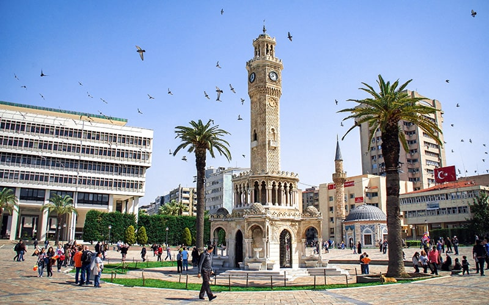

Кыргызстан
Кыргызстан - страна удивительных ландшафтов, красивых озер и гор,завораживающих посетителей со всего мира. 94% территории Кыргызстана - горы. Это делает страну идеальной для пеших прогулок,4x4 -туров, треккинга, верховой езды и езды на велосипедах.


Все туры по Кыргызстану
4x4 туры
Велосипедные туры
Горнолыжные туры
Катание на лошадях
Охота на орлов
Пеший поход
Поход в горы
Этно туры


Отзывы наших клиентов:


Фотографии наших клиентов: